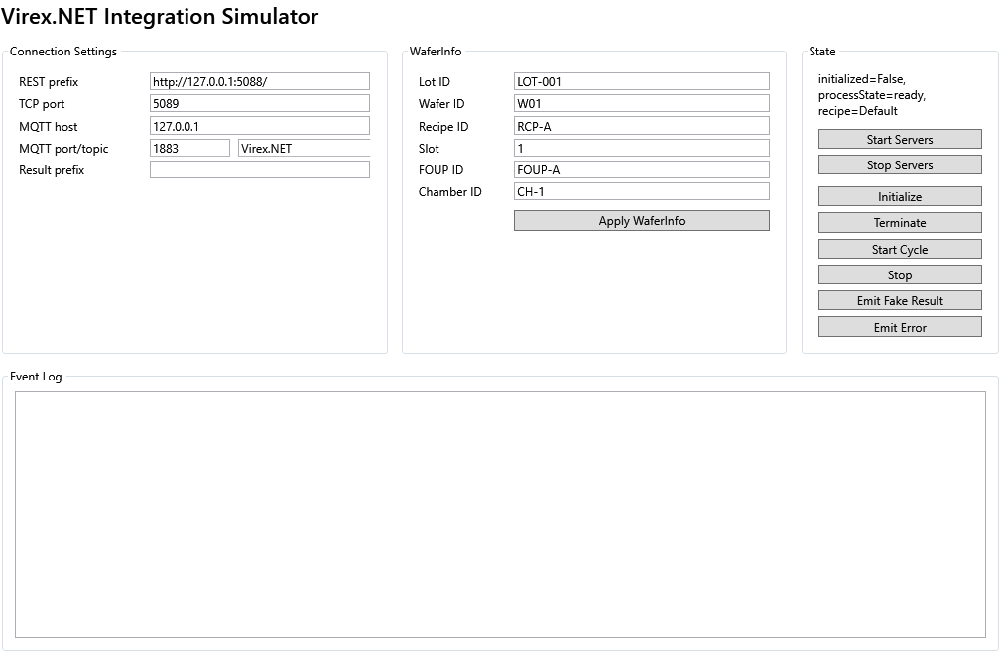

驗證 SDKValidate the SDK
確認 VirexClient 可以讀取狀態、送出 WaferInfo、啟動流程並查詢 result summary。Confirm that VirexClient can read status, submit WaferInfo, start a cycle, and query result summaries.
Simulator 操作手冊 Simulator User Manual
Simulator 是客戶端整合開發時的本機測試工具。它提供 REST、TCP 與 MQTT 端點， 並可模擬 WaferInfo、狀態變化、result summary 與 error event。 The simulator is the local test tool for customer-side integration development. It exposes REST, TCP, and MQTT endpoints and can simulate WaferInfo, state transitions, result summaries, and error events.
確認 VirexClient 可以讀取狀態、送出 WaferInfo、啟動流程並查詢 result summary。Confirm that VirexClient can read status, submit WaferInfo, start a cycle, and query result summaries.
讓非 C# 系統測試 REST payload、TCP/NDJSON frame 與 MQTT topic。Allow non-C# systems to test REST payloads, TCP/NDJSON frames, and MQTT topics.
在本機模擬 status、wafer-info、result、error，方便客戶端先完成處理邏輯。Simulate status, wafer-info, result, and error events locally so client handling logic can be completed early.
下圖是實際 Simulator App 介面。請依照標號了解各區用途與操作順序。 The image below is the actual Simulator App interface. Use the markers to understand each area and the operating order.

1 2 3 4 5 6 7 8設定 REST prefix、TCP port、MQTT host/port/topic，以及 result prefix。測試前先確認這區。Configure REST prefix, TCP port, MQTT host/port/topic, and result prefix. Confirm this area before testing.
輸入 Lot ID、Wafer ID、Recipe ID、Slot、FOUP ID、Chamber ID。Enter Lot ID, Wafer ID, Recipe ID, Slot, FOUP ID, and Chamber ID.
顯示 initialized、processState 與 recipe，並提供主要操作按鈕。Shows initialized, processState, and recipe, and contains the main operation buttons.
顯示 server 啟動、WaferInfo 更新、cycle、result、error 等執行紀錄。Shows server start, WaferInfo updates, cycle events, results, errors, and other activity.
第一個要按的按鈕。按下後 REST/TCP/MQTT 才會開始對外服務。The first button to press. REST/TCP/MQTT services are available only after this step.
修改 WaferInfo 後按下，讓 simulator 套用目前測試 wafer context。Press after editing WaferInfo so the simulator applies the current test wafer context.
用來模擬完整 cycle，狀態會依序變化並產生 result summary。Simulates a full cycle, state transitions, and a result summary.
手動產生 result 或 error，適合測試客戶端事件處理與 UI 顯示。Manually emits a result or error to test client event handling and UI display.
samples/csharp-sdk。Run samples/csharp-sdk.dotnet run --project src\Virex.NET.Simulator.WPF\Virex.NET.Simulator.WPF.csproj第一次使用建議保留預設值：REST http://127.0.0.1:5088/、TCP 5089、MQTT 127.0.0.1:1883、topic Virex.NET。For first use, keep the defaults: REST http://127.0.0.1:5088/, TCP 5089, MQTT 127.0.0.1:1883, topic Virex.NET.
成功後 Event Log 會顯示 Servers started.，SDK 或 sample code 才能連線。When successful, Event Log shows Servers started.. SDK and sample clients can connect after this step.
填入 Lot ID、Wafer ID、Recipe ID、Slot、FOUP ID、Chamber ID，按 Apply WaferInfo。Enter Lot ID, Wafer ID, Recipe ID, Slot, FOUP ID, and Chamber ID, then press Apply WaferInfo.
按 Initialize 後狀態變成 initialized，再按 Start Cycle 模擬 capturing、inspecting、saving 等流程。Press Initialize to set initialized state, then press Start Cycle to simulate capturing, inspecting, and saving states.
使用 Emit Fake Result 測試 result handling；使用 Emit Error 測試 error handling。Use Emit Fake Result to test result handling and Emit Error to test error handling.
測試完成後按 Stop Servers，或直接關閉視窗讓 simulator 停止服務。After testing, press Stop Servers or close the window to stop simulator services.
dotnet run --project samples\csharp-sdk\CSharpSdkSample.csprojdotnet run --project samples\csharp-raw-rest\CSharpRawRestSample.csprojdotnet run --project samples\csharp-raw-tcp\CSharpRawTcpSample.csprojRestBaseUrl、TCP host/port、MQTT host/port/topic 與 UI 一致。Confirm Start Servers was pressed and SDK RestBaseUrl, TCP host/port, and MQTT host/port/topic match the UI.